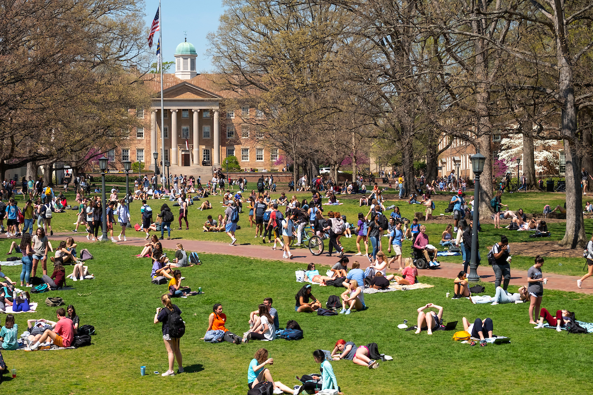

Mia's Autobiography
The Start
August rolled around which meant the start of my freshman year at university was about to begin. I didn’t know what to expect and how I would like being at university but I said goodbye to my family and made my way to my dorm. As a freshman and an international student, I felt like a lost puppy for the first few weeks, struggling to find my way around the huge campus. I really struggled with my first semester at UNC. While I couldn’t seem to find my people or my place I still enjoyed being part of the community, going to sports games and trying new restaurants. I also didn’t seem to get on very well with my roommate which made my life more stressful. I didn’t have an idea of how the classes were at UNC so I ended up accidentally picking reading intensive classes which made me preoccupied and constantly stressed. The hardest part for me was my inability to settle down and find a group of people I could relate to. This was partly because of how many times I had big transitions in such a short period of time. At the start of the semester, I managed to walk onto the swim team. I didn’t know if I had a shot but knew I would regret it if I didn’t give it a go. While I was ecstatic that I made the team, I was staying in a different building and not living with the rest of the freshman swimmers which made it that much harder to find my place in the team. The gruelling 5am practises, and lack of sleep left me dragging myself just to make it to the end of each day. My body ached from 2-3 practises a day and my brain constantly felt scrambled. Living on the opposite side of campus to where the pool was meant I had to bike to the pool everyday which didn’t help at all. The practises were the most intense training I've ever experienced and I would cry to my parents on the phone everyday questioning if I could do it and if I was meant to be there. Just as I started to settle and adjust to the intense athlete life, I got an injury that would put me out for the rest of the season. I sat in the doctor's office listening to him say I have stress fractures in my back and that I wouldn’t be able to swim or do anything for the next 3-4 months made my heart sink.
Yet again, I felt out of place and lost what I felt like was some grounding and a routine. I had to adjust to my new schedule of doing nothing but going to classes and doing homework. This was a struggle at first but I slowly began to do things that I enjoyed that wouldn’t be possible when I had training. I started hanging out more with my suitemates and friends. Being injured and not training, I was always at the hospital having scans and checkups, talking to specialists and nutritionists. I remained feeling unsettled for the rest of the semester and I counted down the days until December, knowing I would see my family again and I would get a break from all the chaos, but in the end I knew I loved UNC - it just took a bit of adjusting.


This is the link to my ENGL 149 class
This is a video tour of UNC's campus